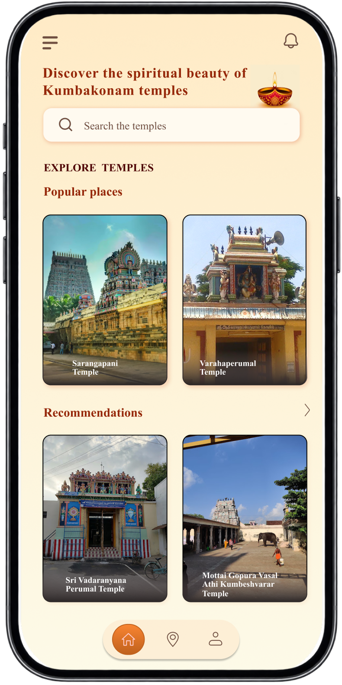
01
Explore Temples
The home screen helps users quickly discover popular and recommended temples in Kumbakonam. A search option also makes it easier to find a specific temple.
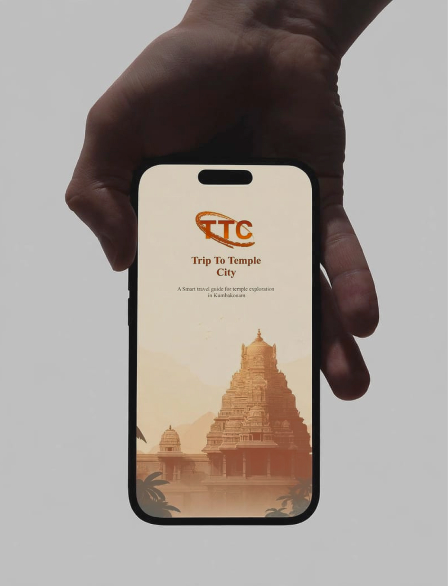
A simpler way to discover the temples of Kumbakonam.
Trip To Temple City is a mobile travel guide created to make exploring Kumbakonam’s temples easier and more convenient. The app helps travelers discover temples, view important details, and explore places through a simple, visually focused experience.
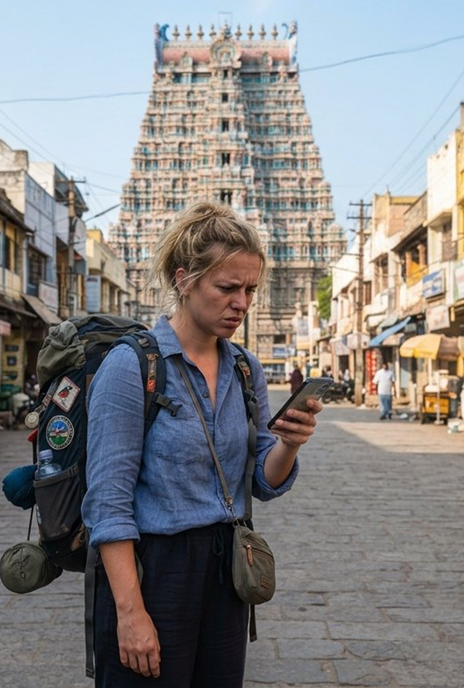
Visitors exploring Kumbakonam often struggle to find reliable information about its temples, discover nearby temples, and plan their temple visits efficiently. The information is scattered across different sources, making the overall travel experience confusing and time-consuming.
Tourists, pilgrims, and first-time visitors exploring the temples of Kumbakonam.
Inspired by the heritage of Kumbakonam, designed for a simple and welcoming travel experience.

Times Of Roman
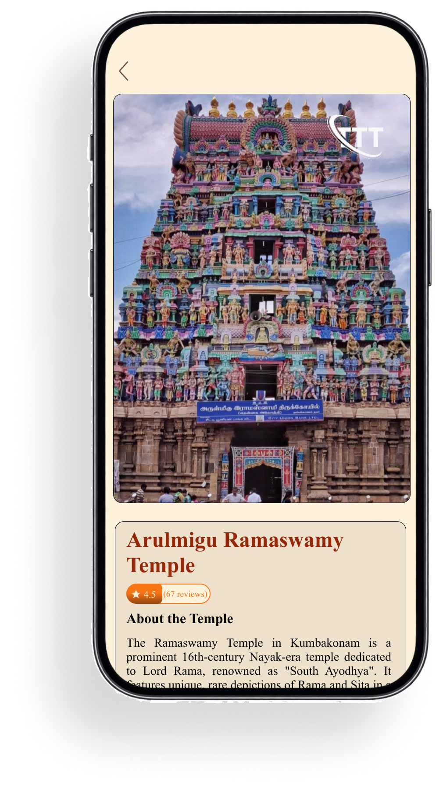
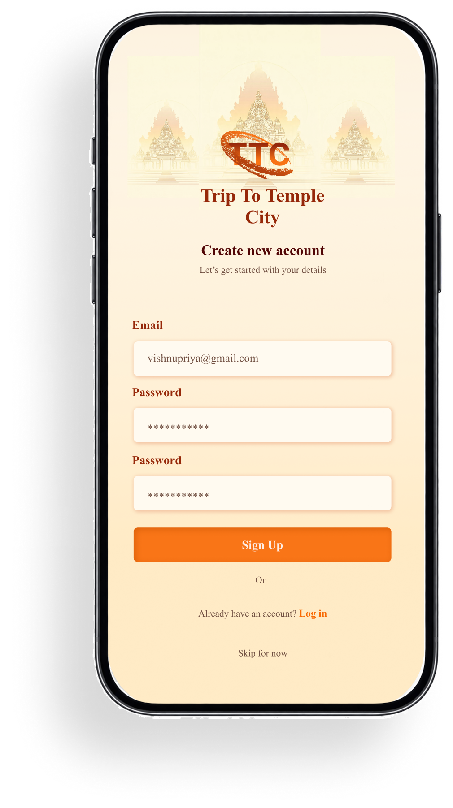
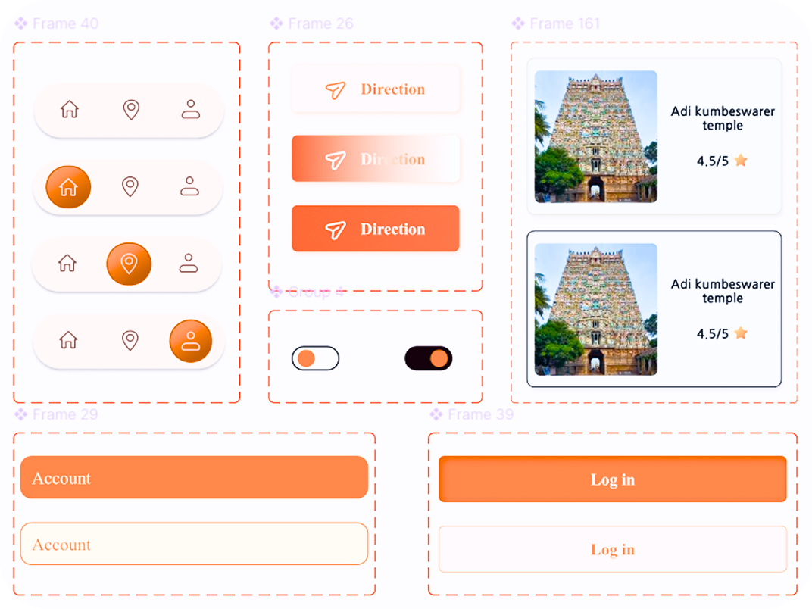
Discover popular and nearby temples in Kumbakonam.
View important information about each temple in one place.
Organize temple visits and make travel planning easier.
Find temple locations and get directions without switching between different sources.
Save interesting temples to easily find them later.
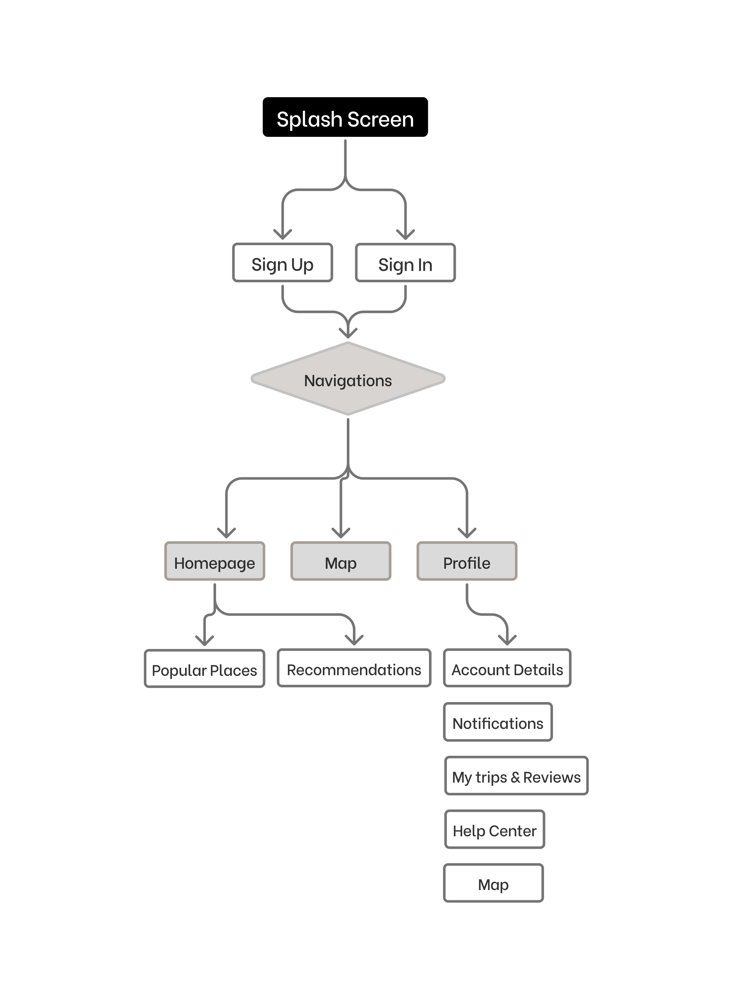

The home screen helps users quickly discover popular and recommended temples in Kumbakonam. A search option also makes it easier to find a specific temple.
Users can explore detailed information about a selected temple, including its image, name, rating, and history, helping them understand the place before visiting.
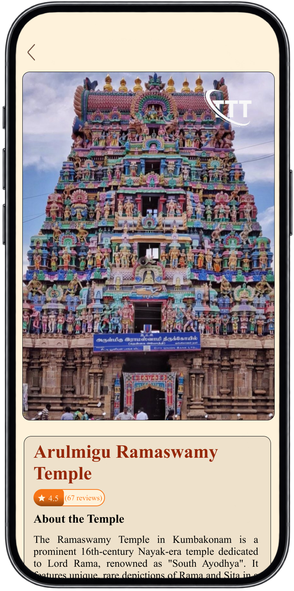
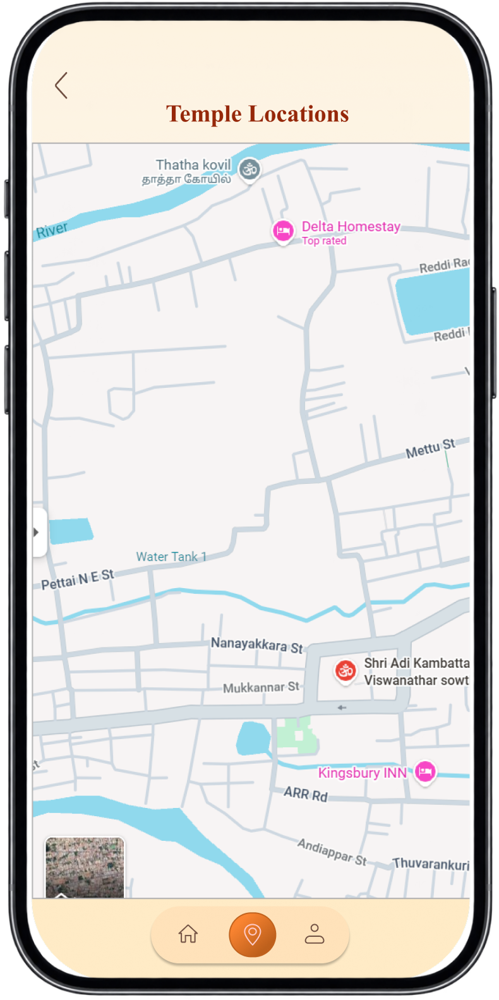
The map screen helps users locate temples and understand where they are situated, making it easier to plan their temple visits.
Users can keep track of the temples they have visited and view their ratings and reviews, creating a personal record of their temple experiences.
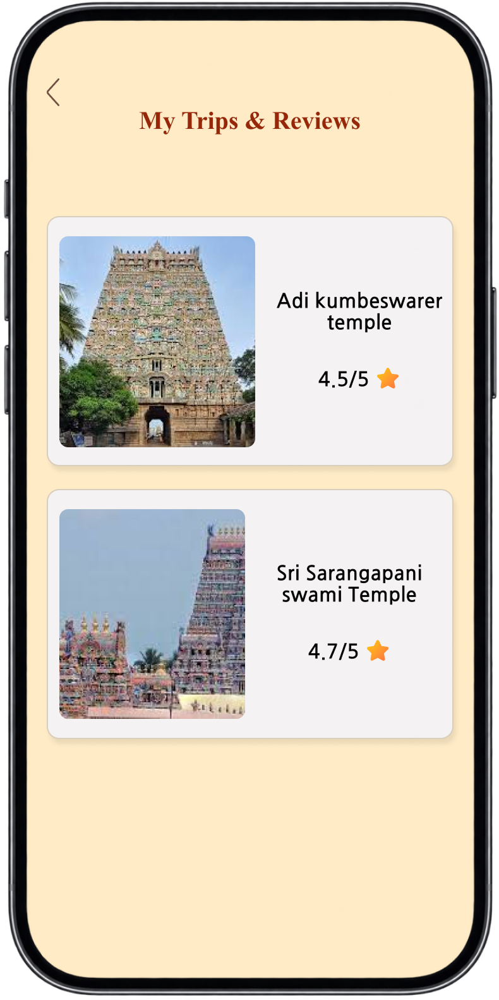
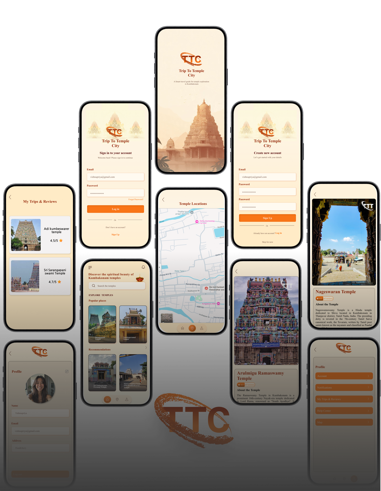
10+ Screens


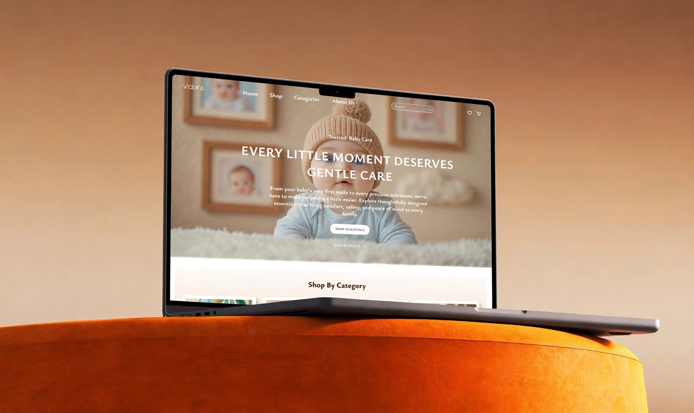
Have any opportunity or projects in mind? Don’t hesitate to reach out, and let’s have a conversation.
Say hello